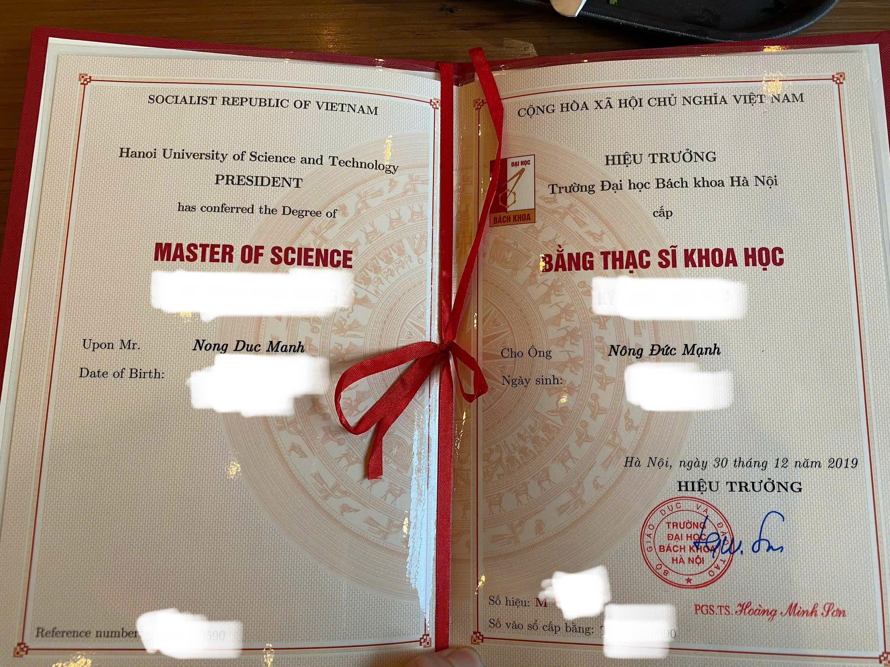
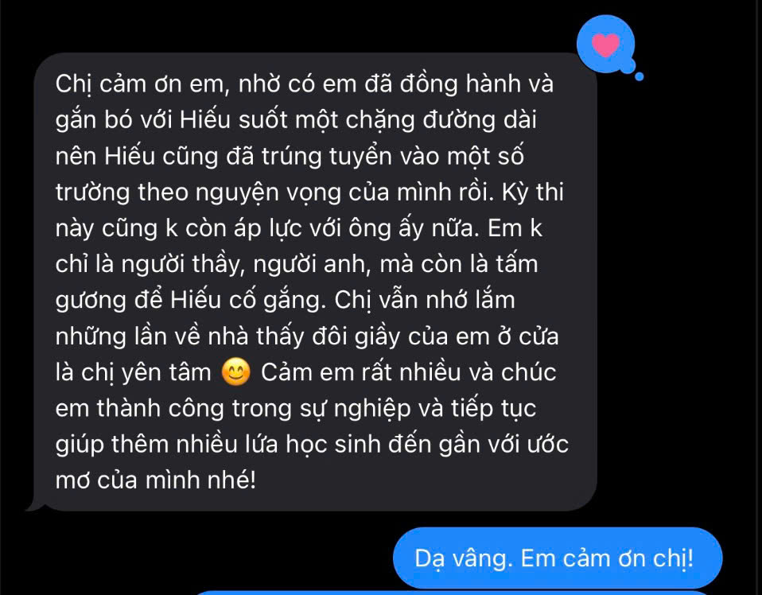
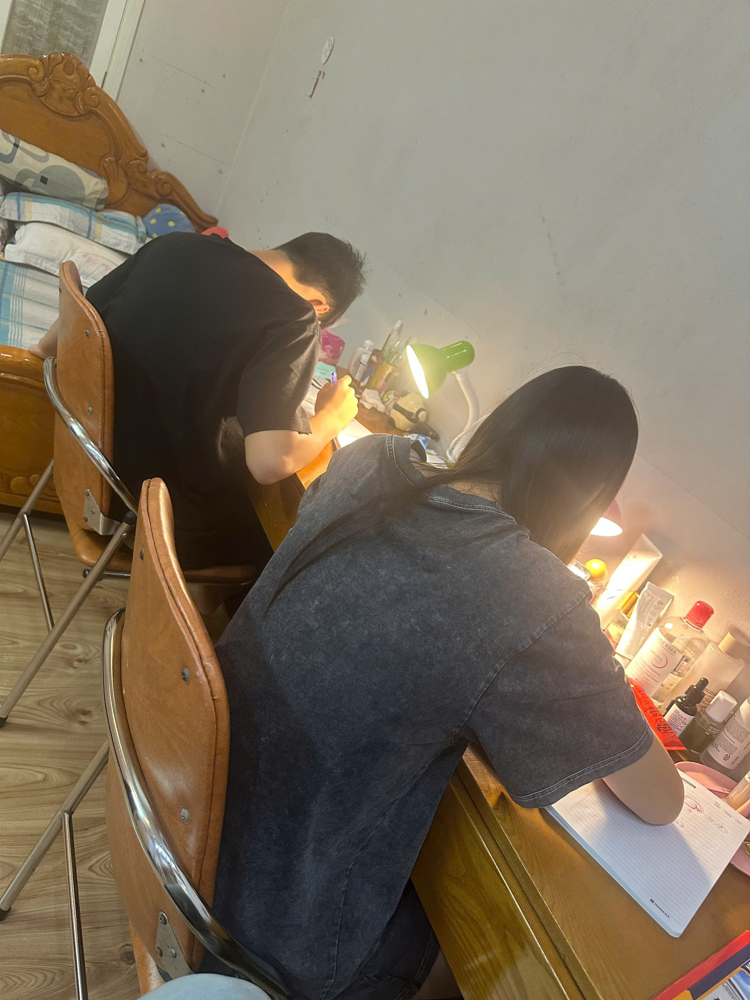
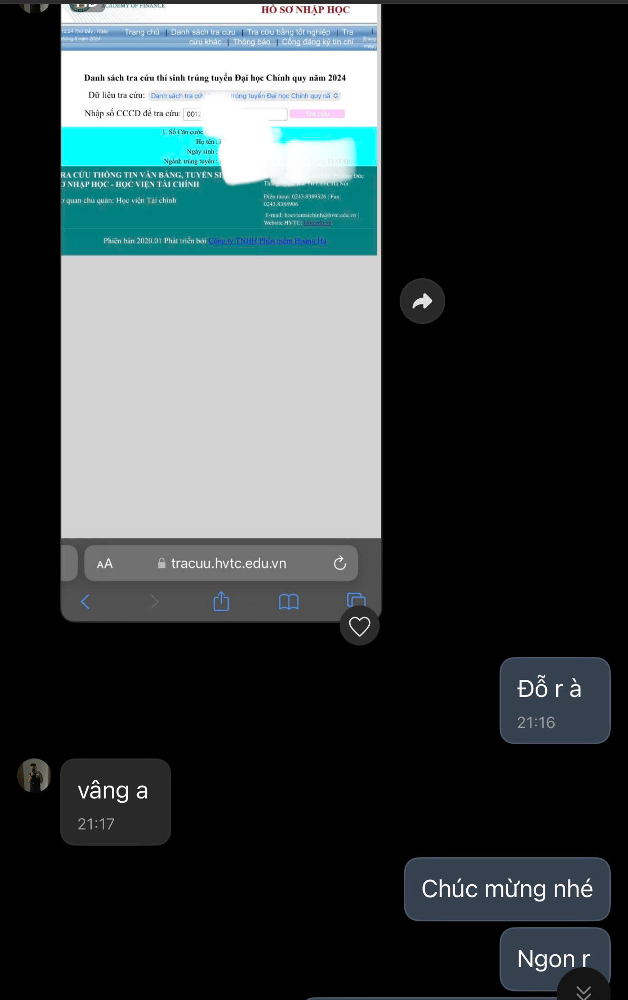

Đức Mạnh
Gia sư Toán tại Hà Nội
Đại học Bách Khoa Hà Nội
Học Toán để hiểu bản chất – rèn tư duy – tiến bộ bền vững
Hơn 10 năm kinh nghiệm gia sư Toán tại Hà Nội, đã đồng hành cùng 200–300 học sinh từ các trường công lập và tư thục trên toàn thành phố.
👨🏫 Giới thiệu
Với hơn 10 năm kinh nghiệm gia sư Toán tại Hà Nội, đã giảng dạy cho 200–300 học sinh từ các trường công và tư trên toàn thành phố.
Học sinh đạt kết quả học tập tốt, trong đó có nhiều bạn đã đỗ vào những trường đại học top đầu như ĐH Bách Khoa Hà Nội, Học viện Tài chính, ĐH Kinh tế,… cũng như du học tại Anh, Mỹ, Úc,…
Luôn chú trọng việc hiểu bản chất, rèn tư duy và xây dựng phương pháp học phù hợp với năng lực của từng học sinh.
🎓 Bằng cấp & quá trình học tập

Tốt nghiệp Thạc sĩ – Đại học Bách Khoa Hà Nội
💬 Một số phản hồi từ phụ huynh & học sinh
Một vài tin nhắn thực tế trong quá trình đồng hành cùng học sinh.



📚 Đối tượng & lớp học
- Học sinh THCS (lớp 6–9)
- Học sinh THPT (lớp 10–12)
- Luyện thi vào 10
- Ôn thi THPT, ĐH
- Ôn thi trường chuyên, trường top
- Học online hoặc trực tiếp tại Hà Nội
🎯 Phương pháp giảng dạy
- Bám sát chương trình và năng lực từng học sinh
- Chú trọng tư duy, hiểu bản chất, hạn chế học vẹt
- Hệ thống bài tập từ cơ bản đến nâng cao
- Cá nhân hóa cách học theo từng em
- Trao đổi với phụ huynh về tiến bộ của học sinh
🌱 Cùng con tiến bộ mỗi ngày
Toán không chỉ là một môn học, mà còn là cách rèn luyện tư duy để chinh phục những mục tiêu lớn hơn.